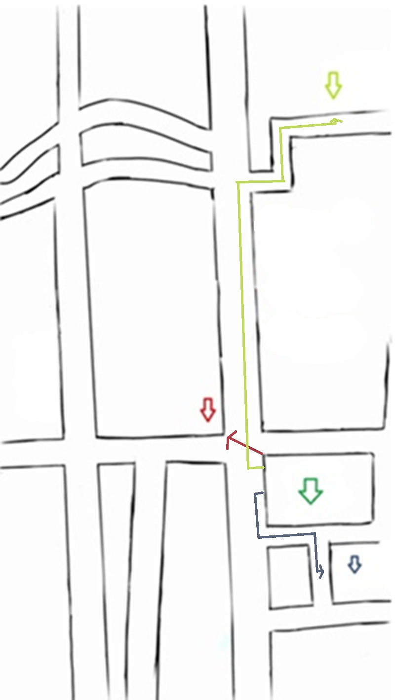

First turn right on the Federal highway,take the four street to the turn right (2 Norte),go straigh for one black, then turn right go straing for 200 meters and you wilkl find there on your left side
Traduccion:Primero gira a la derecha en la carretera federal, toma la cuarta calle para girar a la derecha (2 Norte), sigue recto por una cuadra, luego gira a la derecha, sigue recto por 200 metros y lo encontrarás a tu izquierda
Kitty corner to the right you are in front of the entrance of the Pharmacy
Traduccion:Diagonal a la derecha estás frente a la entrada de la farmacia
first the central park ,turn right and go straight there is a small street.
Then follow that street until you are in front of the right side.
Traduccion:Primero el Central Park, gira a la derecha y sigue recto, hay una calle pequeña.
Luego sigue esa calle hasta que estés frente al lado derecho.
Mapa de tlacotepec y como llegar 3 diferentes destinos